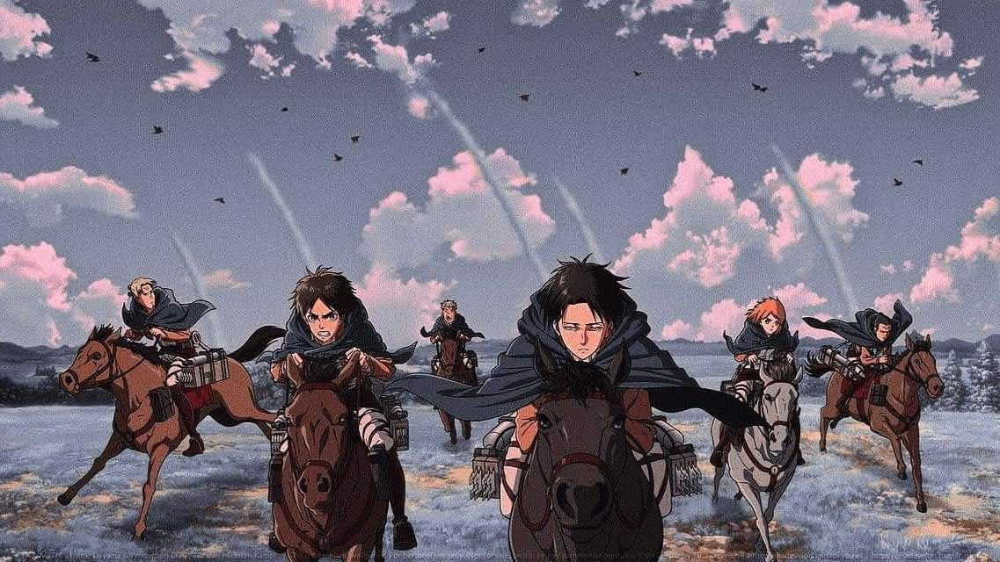

Buenas, me presento soy Gael Arias, un estudiante de 4° de secundaria y estoy muyt feliz de serlo :D.
No tengo grandes aspiraciones en la vida, ya que no espero demasiado de mì 😔, pero cada dia me supero y logro estar en armonia conmigo mismo.
Me apasionan pocas cosas, pero de las que disfruto, suelen ser actividades de las cuales no se requieren mucho esfuerzo, pero si se gozan de buena manera.
Algunas de las actividades que he estado realizando ultimamente, fueron:
Es algo de lo que he estado disfrutando, gracias a las diversas emociones que trasmiten, pero por los que mas reacciono son la emocion de una buena pelea, y la tristeza de la perdidad de un personaje
Hago esta actividad de manera secundaria, es decir escucho muúsica de fondo mientras hago una actividad que no requiera mi audicion, como limpiar (algo que me gusta hacer, mas no lo hago muy seguido)
Desde niño las historietas o comics siempre llamaron mi atención porque son muy coloridas, pero ya ahora me interesan más los mangas, que son como comics pero de anime (asi son para mí), aunque la mayoria de estos son a blanco y negro, por lo que no entiendo algunas escenas 🤨.
Pero aún así me gustan :3. Aunque no me guste leer demasido 😖
Para este gran año espero convertirme en un sabio. Espero conocer todo las obras presentadas, el contexto en las que se escribieron, en que se inspiraron los autores, y demas de sus escritores.
Porque algo que me gusta es saber de cultura, osea de hechos, perosnas, fechas acontecimientos, etc; pero no soy bueno en eso 😔.